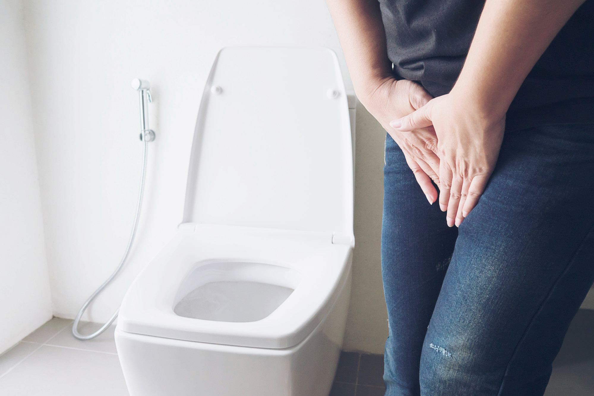
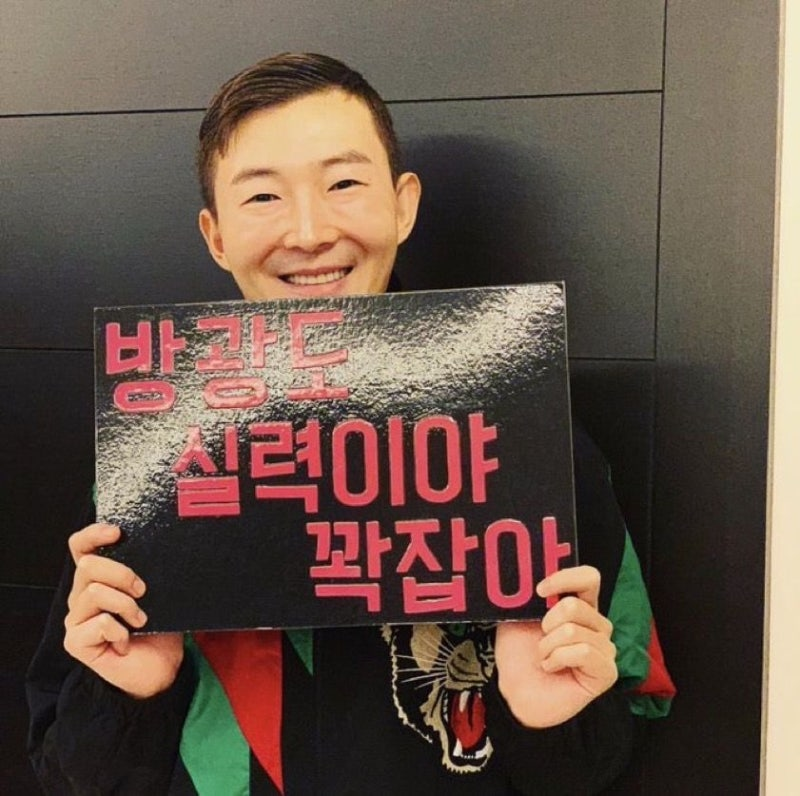

점심 식사
1. 대망의 점심시간. 수능의 특수성을 고려하여 속이 편한 음식들로 도시락을 구성하였다.(물론 엄마가) 엄마는 음식 솜씨가 좋다. 내 기준으로 미슐랭이랄까.그 날은 이상하게도 평소보다 음식이 더 맛있었다. 특히나 콩나물국이. 그래 콩나물국. 그 콩나물국이 문제였다.너무 맛있던 탓에 국물까지 싹싹 비웠다.

2. 그런데 잠깐. 7번 문제가 들려오던 참이었다.나…방광이 터질 것 같다.

3. 첫 모의고사이자 수능이기에 내 방광의 사이즈를 미처 계산하지 못한것이다. 나는 유명한 작은 방광이다. 커피를 마시면 화장실을 5번정도는 가야하는.머릿속에 ‘방광도 실력이야 꽉 잡아’ 라는 문구가 계속 떠오른다.

4.그냥…저질러버릴까?
수능은 상대평가잖아. 나만 못보는게 아니야. 그냥 인간으로서의 존엄성…한번 쯤 버릴까? 라는 생각을 하며 초조하게 듣기평가를 풀었다. 마지막 문제는 왜 또 두 번이나 들려주는거야???한 번만 듣고 바로 나간다. 마지막 문제를 듣고 바로 교실 밖으로 뛰쳐 나갔다.
그거 아는가?
수능 도중 화장실을 가기 위해서는 복도에 상주하고 계시는 ‘금속탐지기를 든 교직원’을 거쳐야 한다.
5.그분은 내가 왜 교실 밖으로 나왔는지 모르는지 내 쪽으로 올듯 말듯 지옥의 줄다리기를 시작했다. 나는 온 몸으로 이쪽으로 와달라고 외쳤고, 간단한 검사 끝에 화장실을 갈 수 있었다. 생각보다 수능의 보안 시스템이 허술하더라. 나는 돌아가 영어 시험을 마저 풀었고, 그 해는 유독 영어가 어려웠다.
그렇게 나는 두번째 수능을 준비하게되었다.